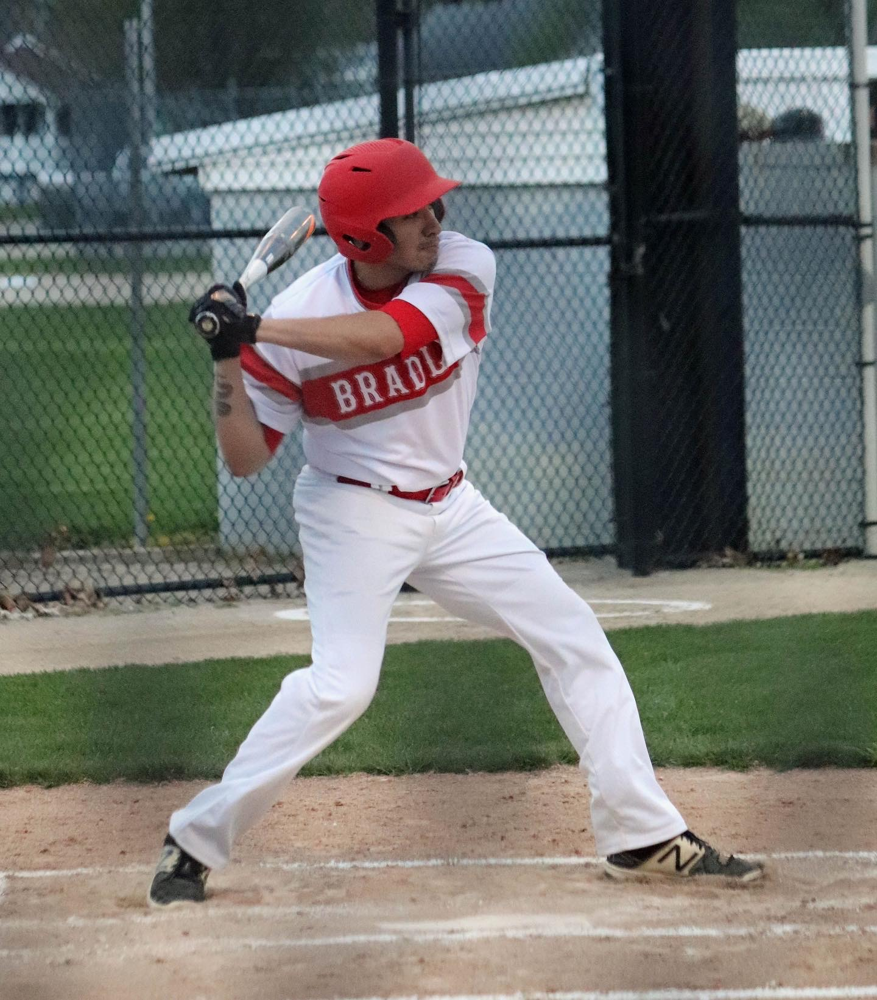
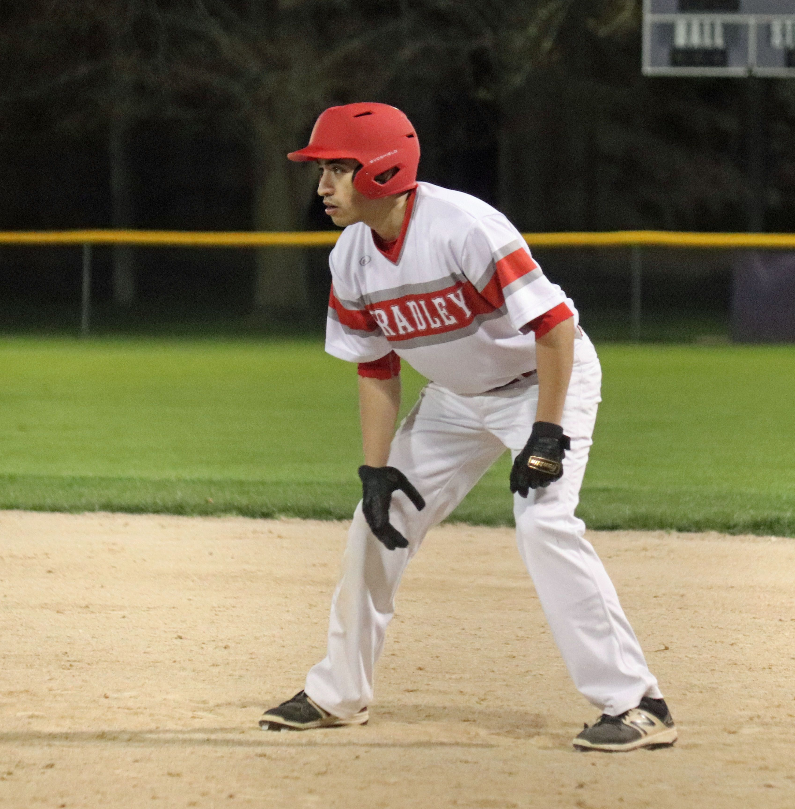

Sebastian is currently studying towards a Bachelor's Degree at Bradley University in Peoria, Illinois
in Computer Information Systems with a Minor in Cybersecurity. At Bradley University,
he is involved with Bradley University's Club Baseball Team and serves on the board as the team Treasurer.
In 2020, he graduated from De La Salle Insitute in Chicago, Illinois with
an Honors Diploma and was involved with Baseball, Golf, Boxing, and Robotics Club.
Sebastian grew up in the South Suburbs of Chicago in Bridgeview, Illinois, where he spent his whole life and still resides.
As an individual, I value my everyday interactions with others as well as my time that I spend alone. Other key values of mine are persistence, determination, and dedication especially when it comes to anything that I do. I am a firm believer in completing tasks, no matter the complexity of the task, correctly and always open to learning and expanding my knowledge.
My career aspirations has changed numerous times since high school. Currently, I aspire to have a position in the Cybersecurity industry but more specifically an ethical hacker. However, I am still keeping my options open and would like get experience in as many different positions I possibly can.
When it comes to my freetime, I absolutely love staying active and playing sports. Going to the gym everyday is something I am very fond of. I still am playing baseball for the Club Baseball team at Bradley University and have been playing baseball for 18 consecutive years. Back in high school, I also picked up a passion for golfing which I often do during my freetime if the weather permits it. Other than staying active, I enjoy spending time with my family and friends. I also enjoy listening to music and playing video games.
 